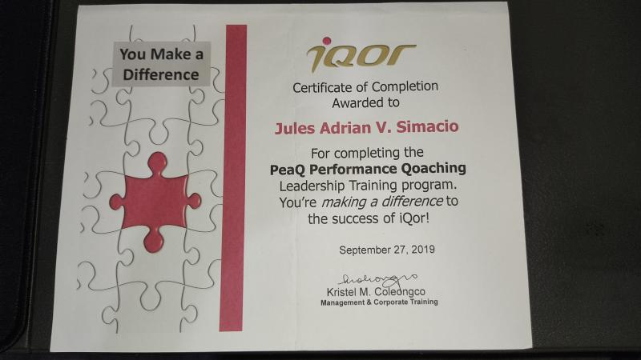
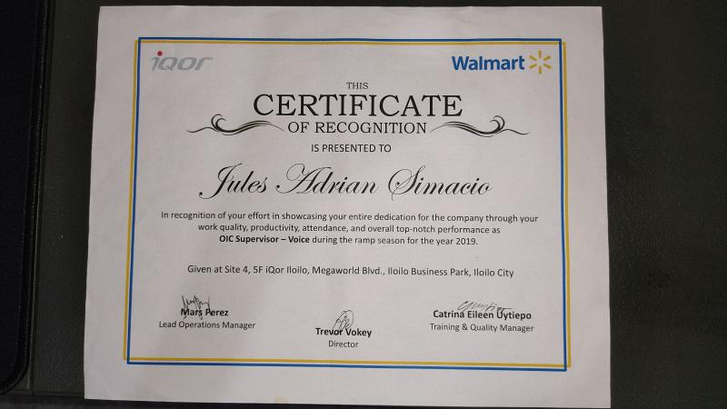
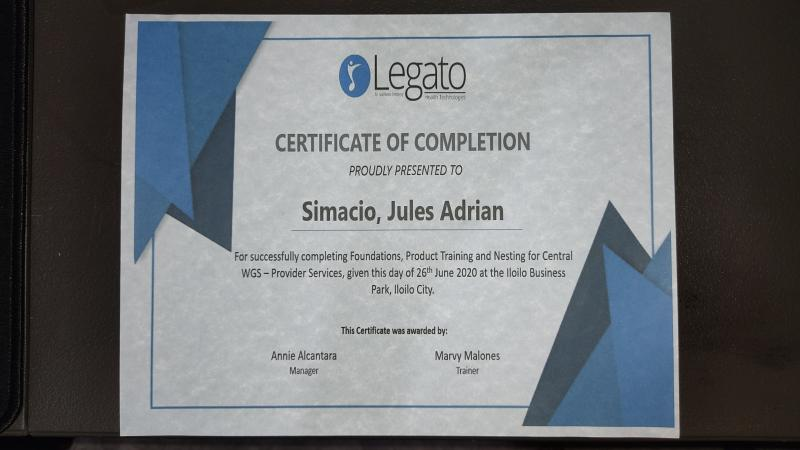

Jules Adrian Simacio
Summary
Dedicated Full Stack Web Developer with a strong background in customer service and a passion for creating engaging and user-friendly web experiences. Offering over 5 years of experience in customer service, I am now actively pursuing a career transition into web development. Committed to continuous learning and staying up-to-date with the latest technologies and industry trends.
Education
- Web Development Bootcamp - Dr Angela Yu (In Progress)
- College Level, Bachelor of Business Administration - University of San Agustin (2015-2019)
- High School Diploma - University of San Agustin (2011-2015)
Work Experience
- Customer Service Expert - Self Employed
Feb 2021 - Present
- Answering enquiries in live chat and email
- Placing customer orders via chat and email
- Helping customers navigating ecommerce websites
- Customer Service Specialist - iQor Iloilo
Oct 2020 - Jan 2021
- Customer Service Expert for Voice and Chat
- Provider Services Representative - Legato Health Technologies Iloilo
Apr 2020 - Sep 2020
- HIPAA compliance and verification
- Answered calls from healthcare providers
- Answered health insurance enquiries via phone
- Customer Service Specialist - iQor Iloilo
Aug 2018 - Feb 2020
- Customer Service Representative for 8 Months
- Promoted as a Subject Matter Expert for 6 Months
- Promoted as a Supervisor OIC for 4 Months
- Customer Sales Repsetentative - SPi Global Iloilo
Jan 2018 - May 2018
- Answering customer enquiries via phone
- Placing customer orders
- Resolving customer complaints and issues
Skills
-
Problem-Solving: Strong analytical and problem-solving skills acquired through customer service roles, enabling me to quickly identify and resolve technical challenges.
-
Communication: Exceptional interpersonal skills developed through customer interactions, allowing for effective collaboration with cross-functional teams and clients.
-
Adaptability: Proven ability to adapt to fast-paced environments, demonstrated by successfully juggling multiple priorities and meeting deadlines.
Awards & Certifications
- Passed iQor's Leadership Training with 100% Score

- Top-notch Performance as OIC Supervisor - Voice during the Ramp Season for the year 2019

- Successfully completing Foundations, Product Training and Nesting for Central WGS - Provider Services

Others